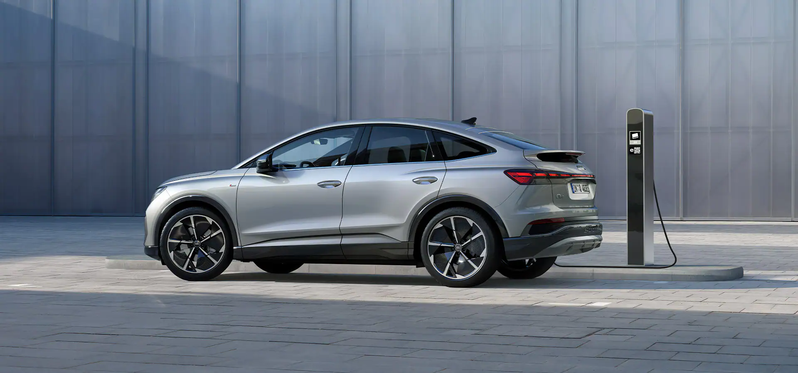
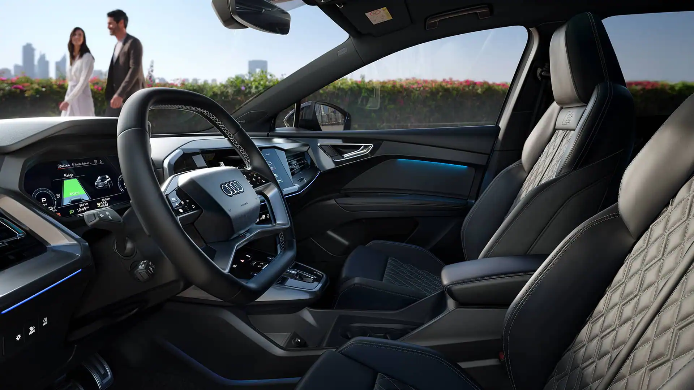

O design desportivo do Audi Q4 Sportback e-tron confere uma forma cativante e caraterística ao futuro da mobilidade elétrica. A imponente dianteira e a poderosa traseira são um dos destaques, a par da silhueta dinâmica e eletrizante.
O design desportivo do Audi Q4 Sportback e-tron confere uma forma cativante e caraterística ao futuro da mobilidade elétrica. A imponente dianteira e a poderosa traseira são um dos destaques, a par da silhueta dinâmica e eletrizante.
Graças ao opcional Audi drive select, as características do veículo podem ser definidas através de uma escolha de cinco modos diferentes. Da eficiência à dinâmica. A direção progressiva (opcional) permite uma relação variável dependente do ângulo da direção, bem como a assistência da direção sensível à velocidade.